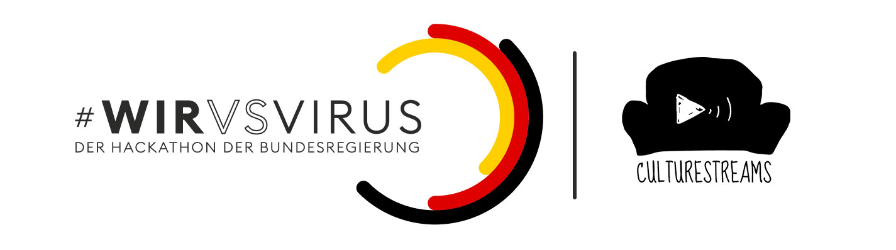

culturestreams.org bringt Kunst und Künstler:innen live in eure Wohnzimmer! Theater und Oper, Ballett und Streetdance, Orchester, Band und Musiker, Poetry-Slam und Lesung – die Plattform versammelt Livestream-Events an einem Ort.
Dieses Projekt ist beim Hackaton #WirVsVirus entstanden!
